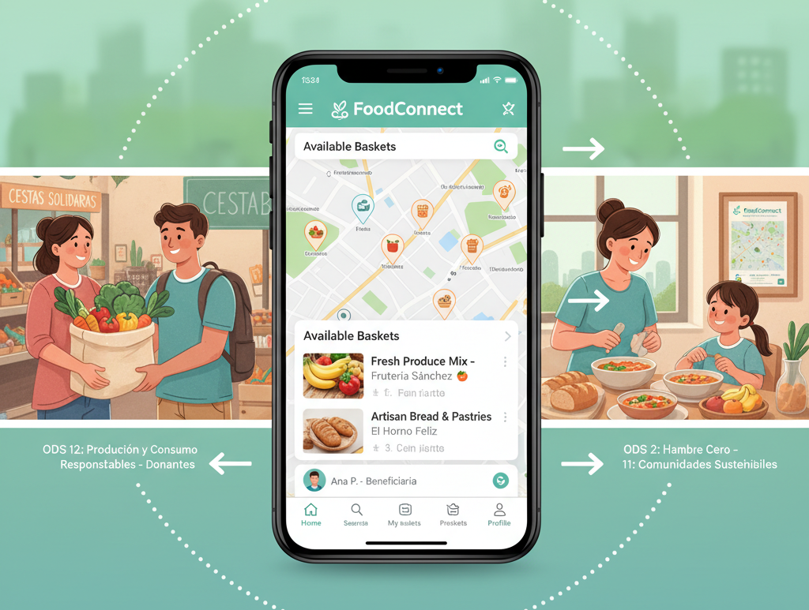

FoodConnect: Conectando a la comunidad para reducir el desperdicio de alimentos.

Este proyecto se alinea directa y explícitamente con los siguientes Objetivos de Desarrollo Sostenible de las Naciones Unidas, tal como se requiere en la programación didáctica:
En nuestra comunidad, una gran cantidad de alimentos en perfecto estado es desechada diariamente por pequeños comercios (fruterías, panaderías, restaurantes) al final de su jornada, así como por particulares. Al mismo tiempo, existen familias y personas con dificultades para acceder a alimentos frescos y nutritivos. La desconexión entre quienes tienen un excedente y quienes lo necesitan es el principal obstáculo.
FoodConnect es una solución software multiplataforma diseñada para servir de puente entre donantes de alimentos y beneficiarios. El sistema constará de tres componentes principales, siguiendo la arquitectura definida en la programación:
| Caso de Uso | Descripción | Prioridad |
|---|---|---|
| Registro de Usuario | Permitir a donantes y beneficiarios registrarse en la aplicación móvil. | Alta |
| Publicar Cesta | Publicar una nueva "cesta de alimentos", especificando contenido, cantidad aproximada, ubicación y horario de recogida. | Alta |
| Subir Foto | Subir una foto de la cesta para mayor transparencia. | Media |
| Ver Estado de Cestas | Ver el estado de sus cestas publicadas (disponible, reservada, recogida). | Alta |
| Notificaciones | Recibir una notificación cuando su cesta sea reservada. | Baja |
| Confirmar Recogida | Confirmar que la cesta ha sido recogida por el beneficiario. | Alta |
| Historial de Donaciones | Consultar su historial de donaciones. | Media |
| Caso de Uso | Descripción | Prioridad |
|---|---|---|
| Registro de Usuario | Permitir a donantes y beneficiarios registrarse en la aplicación móvil. | Alta |
| Buscar Cestas | Buscar cestas de alimentos disponibles cerca de su ubicación usando un mapa o una lista. | Alta |
| Filtrar Búsquedas | Filtrar búsquedas por tipo de alimento o distancia. | Media |
| Ver Detalles de Cesta | Ver los detalles de una cesta y la información del donante. | Alta |
| Reservar Cesta | Reservar una cesta disponible. | Alta |
| Chat con Donante | Comunicarse con el donante a través de un chat simple para coordinar la recogida. | Baja |
| Historial de Recogidas | Consultar su historial de recogidas. | Media |
| Caso de Uso | Descripción | Prioridad |
|---|---|---|
| Inicio de Sesión Seguro | Permitir a los administradores iniciar sesión de forma segura. | Alta |
| Gestión de Usuarios | Ver un listado de todos los usuarios (donantes y beneficiarios). | Alta |
| Validar ONGs | Validar el registro de nuevas ONGs o comedores sociales. | Media |
| Bloquear/Eliminar Usuarios | Bloquear o eliminar usuarios que incumplan las normas de la comunidad. | Alta |
| Gestión de Publicaciones | Visualizar y eliminar publicaciones que sean inapropiadas. | Media |
| Ver Estadísticas | Ver estadísticas básicas (ej: nº dse cestas donadas en la última semana, nº de usuarios activos). | Baja |
| Riesgo | Mitigación |
|---|---|
| Chat en tiempo real | Requiere del uso de FLows y corrutina en Kotlin + Firebase |
| Mapas y geolocalización | Uso de Google Maps SDK (API Key) y componentes específico de Maps en compose |
| Notificaciones push | Uso de Firebase Cloud Messaging (FCM) |
| Complejidad JWT | Taller extra + plantilla base o usar sesiones |
| Retraso en integración | Feature-flags para desactivar parte no crítica |
| Scope creep | Definición clara del Producto Mínimo Viable (MVP) priorizando el backlog |
| Falta de experiencia | Uso de IA para generación de código y resolución de dudas |
| Falta de compromiso | Reuniones semanales de seguimiento y revisión del progreso |
| Conflictos en equipo | Roles claros y comunicación abierta |
La planificación temporal sigue rigurosamente el marco establecido en la programación didáctica del módulo, dividiéndose en tres etapas: fase preparatoria inicial (semanas 1-8), fase de desarrollo colaborativo en equipo mediante SCRUM (Sprints 1 al 8, semanas 9 a 24) y fase de desarrollo individual durante la Formación en Empresa (FE) (semanas 25 a 32), culminando con la presentación final.
| Sprint | Semanas | Fechas | Objetivo Principal | Entregable Clave (FoodConnect) |
|---|---|---|---|---|
| 1 | 9-10 | 09 nov 20 nov |
Prototipado UI/UX | Prototipos navegables en Figma/Penpot de la App móvil (vistas de donante y beneficiario) y de la App de escritorio para administración. |
| 2 | 11-12 | 23 nov 04 dic (1ª Ev) |
Modelo de dominio en C#, transpilación y mocks con IA | Clases de dominio C# (Usuario, Donante, Beneficiario, Cesta, Reserva, Ubicacion), transpiladas con IA a Kotlin y Java, junto con datasets sintéticos JSON para pruebas desacopladas. |
| 3 | 13-14 | 07 dic 18 dic |
Frontend Móvil (Android + MVI): UI | Implementación de pantallas en Android (Jetpack Compose + Material 3) para la App de donantes y beneficiarios, con navegación visual y previews. |
| 4 | 15-16 | 07 ene 15 ene |
Frontend Móvil: Lógica funcional | Sprint Planning e integración de ViewModels (arquitectura MVI), lógica de interacción y consumo de repositorios mock de cestas y reservas. |
| 5 | 17-18 | 18 ene 29 ene |
Frontend Escritorio (WPF + MVVM): UI | Implementación de vistas XAML con WPF para la gestión administrativa de FoodConnect (listado de usuarios, moderación de publicaciones). |
| 6 | 19-20 | 01 feb 12 feb |
Frontend Escritorio: Lógica funcional | Implementación de ViewModels (patrón MVVM con CommunityToolkit), comandos e interacción conectando con datos mock de administración. |
| 7 | 21-22 | 15 feb 26 feb (2ª Ev) |
Backend: API REST (CRUD) | Definición de entidades ORM y esquema MySQL. Endpoints CRUD completos para gestión de usuarios, cestas de alimentos y reservas. |
| 8 | 23-24 | 01 mar 12 mar |
Backend: API REST (Lógica de negocio) | Servicios con reglas de negocio (disponibilidad de stock, control de caducidad, bloqueo de solapamientos), DTOs y manejo centralizado de excepciones. |
| FE | 25-28 | 15 mar 21 may |
Fase Formación en Empresa: Trabajo Individual | Implementación de funcionalidades individuales avanzadas sin Scrum (evaluación con rúbrica individual por alumno). |
| Fin | 33-34 | 24 may 04 jun |
Cierre, entrega y defensa | Memoria técnica final en Markdown (PROYECTO.md y DISENO.md), vídeo demostrativo del producto (2-3 min) y defensa oral del proyecto. |
Durante la estancia en empresa (FE), cada miembro de BalmisTech desarrolla de forma autónoma una de las propuestas excluyentes del catálogo oficial:
DONANTE, BENEFICIARIO, ADMIN) y documentación interactiva con Swagger UI.HttpClient y JWT, permitiendo la moderación de publicaciones y validación de ONGs en tiempo real contra el servidor.https://github.com/BalmisTech/FoodConnect
├── docs/
│ ├── PROYECTO.md ← visión, ODS, casos de uso
│ ├── DISENO.md ← modelo, decisiones arquitectónicas
│ └── DIARIO.md ← seguimiento semanal individual
├── backend/
├── frontend-wpf/
└── frontend-android/